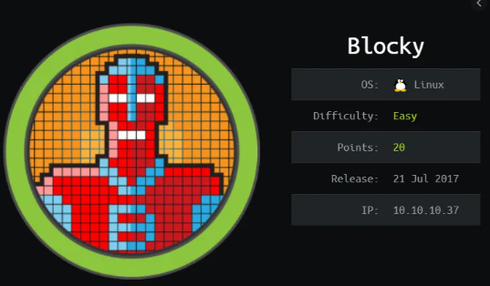
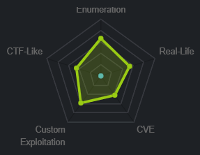

Index
- Lame
- nmap
- ftp vsftpd
- samba exploit
- distccd v1 exploit
- post exploitation password cracking
- lessons learned
- brainfk
- nmap
- http
- certficate
- /etc/hosts
- brainfuck.htb is wordpress
- SMTP Integration is ready
- Sup3rs3cr3t.htb
- id_rsa
- ssh orestis
- user/root
- lessons learned
- bashed
- nibbles
- nmap
- http
- initial foothold
- privesc through monitor.sh file creation
- priv esc through rationallove kernel exploit
- user/root
- lessons learned
- poison
- nmap
- http
- foothold 1 backuppasswd.txt
- foothold 2: phpinfo.php race condition
- foothold 3: Log Poisoning
- priv esc
- user/root
- lessons learned
- popcorn
- sense
- beep
- nmap
- http
- rooting box through LFI turned to RCE
- graph.php LFI
- /vtigercrm/graph.php?current_language exploit
- more LFI exploit info gathering w/ burp
- turning LFI to RCE through SMTP php code embedded email
- rooting box w/ shellshock
- rooting box w/ RCE searchsploit
- user/root
- lessons learned
- cronos
- nmap
- http
- dns xfer (dig)
- initial foothold
- Enumeration
- priv esc with Kernel.php
- priv esc with artisan
- priv esc with kernel exploit dirty cow
- user/root
- lessons learned
- solidstate
- nmap
- port 4555
- port 110 POP
- ssh mindy@10.10.10.51
- james apache server OSI
- privesc
- lessons learned
- valentine
- nmap
- http
- initial foothold w/ heartbleed
- priv esc
- user/root
- lessons learned
- sunday
- nmap
- finger user enumeration
- ssh password brute force w/ patador & Hydra
- ssh sunny
- sammy
- potential shellshock (fail)
- privesc through wget etc/shadow
- privesc with /usr/bin/pfsh
- user/root
- lessons learned
- nineveh
- nmap
- http/https
- hydra bf
- initial foothold
- privesc to root
- additional foothold
- user/root
- lessons learned
- shocker
- irked
- node
- nmap
- http
- initial foothold on mark
- privesc to Tom
- linEnum.sh
- escalation method 1: mongo_db rev shell
- escalating method 2: copy privileged shell (ippsec)
- privesc to root
- find / -perm -4000 2>/dev/null
- /usr/local/bin/backup
- badchars
- intended privesc- Buffer Overflow
- check for overflowed buffer
- pattern create
- python -c 'print "A"*520'
- buf.py
- find libc, system_off, exit_off and arg_off starting address
- update ret
- run buf.py win
- unintended privesc methods
- user/root
- lessons learned
- kotarak
- nmap
- kotarak web hosting page
- initial foothold
- priv esc
- user/root
- lessons learned
- tartarsauce
- nmap
- http
- monstra login (rabbit hole)
- initial foothold
- privesc to Onuma
- privesc to root
- user/root
- lessons learned
- friendzone
- nmap
- http
- smb
- dig zone xfer
- initial foothold
- privesc to user friend
- privesc to root
- user/root
- lessons learned
- swagshop
- jarvis
- nmapAutomator
- gobuster
- initial foothold
- manual sqlinjection (Blind SQL injection)
- Error based Blind SQL Injection
- revshell.php
- Exploit the SQL injection to add php code into a file on the system
- reverse shell
- sqlmap
- privesc to pepper
- privesc to root
- user/root
- lessons learned
- networked
- nmapAutomator.sh
- initial foothold
- privesc to guly
- priv esc to root
- user/root
- lessons learned
- LaCasaDePapel
- nmapAuto
- vsftp 2.3.4 exploit
- initial foothold
- https
- generate client key
- certificate sign request data
- convert to PKCS12
- add key to firefox certificate store
- add ca.crt to firefox
- refresh page
- Local file Inclusion Vuln
- ssh into professor acct
- user.txt
- privesc
- user/root
- lessons learned
- devoops
- nmapAutomator.sh
- http (port 5000) gunicorn
- XML XXE Injection foothold
- privesc
- user/root
- lessons learned
- safe (linux BoF)
- nmapAutomator
- http
- initial foothold
- ghidra
- buffer overflow
- privilege escalation
- user/root
- lessons learned
- lightweight
- nmapAuto
- ldap
- http
- ssh
- wireshark
- tcpdmp
- lightweight.ens33.cap
- refresh all the webpages and intercept LDAP packets
- privesc to ldapuser2
- privesc to ldapuser1
- privesc to root
- user/root
- lessons learned
- hawk
- nmapAuto
- http:80, 8082 & 9092
- ftp
- initial foothold
- priv esc
- user/root
- lessons learned
- jail
- nmapAutomator
- http
- initial foothold
- priv esc from nobody to frank
- priv esc from frank to adm
- priv esc from adm to root
- user/root
- lessons learned
- blocky
- openadmin
- nmap
- http
- initial foothold
- priv esc to jimmy
- priv esc to joanna
- main.php
- check internal listening ports w/ ss -lntp
- curl 127.0.0.1:52846
- ssh2john
- john brute force
- ssh to joanna
- priv esc to root
- user/root
- lessons learned
- falafel
- nmap
- http
- privesc to moshe
- priv esc to yossi
- priv esc to root
- user/root
- lessons learned
- magic
{kind=link}
.html){kind=link}
.html){kind=link}
.html){kind=link}
--edit_this_torrent-change_screenshot.html){kind=link}
--Repeater_simple_php_code_injection.html){kind=link}
--Repeater_simple_php_code_injection--wget_tcp_pty_handler.html){kind=link}
--Repeater_simple_php_code_injection--reverse_shell.html){kind=link}
{kind=link}
{kind=link}
{kind=link}
{kind=link}
blocky
